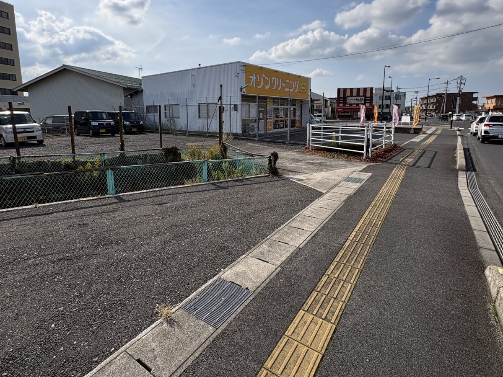
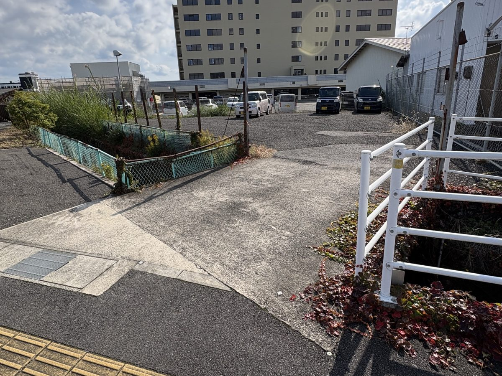

ACCESS
事務所へのアクセス
お車でお越しの方は、まず駐車場へお越しください。
P
まず駐車場に停める
黄色い看板の「オゾンクリーニング」のすぐ隣にある、砂利の駐車場です。地図と写真の青いところに停めてください。入口は、歩道の白い柵と緑のフェンスの間です。
歩いて事務所へ（約2分）
駐車場の入口から歩道に出て右へ。道沿いに約150m進むと、ひの歯科クリニック隣の栄光ビルです（2階）。地図の赤い点線のとおりです。
駐車場
「オゾンクリーニング コインズ中野店」（黄色い看板）のすぐ隣にある、砂利の駐車場です。写真の青いところの、空いている場所に停めてください。入口は、歩道の白い柵と緑のフェンスの間です（写真の矢印）。


所在地
| 会社名 | バンソウズ合同会社 |
|---|---|
| 住所 | 〒693-0012 島根県出雲市大津新崎町1丁目46-2 栄光ビル 2階 |
| 電話 | 080-1935-2913（石田） |
カーナビをお使いの方へ
- 目的地は「オゾンクリーニング コインズ中野店」（出雲市大津新崎町1丁目38）にしてください。その隣が駐車場です。
- 道に迷われたときは、お気軽にお電話ください。